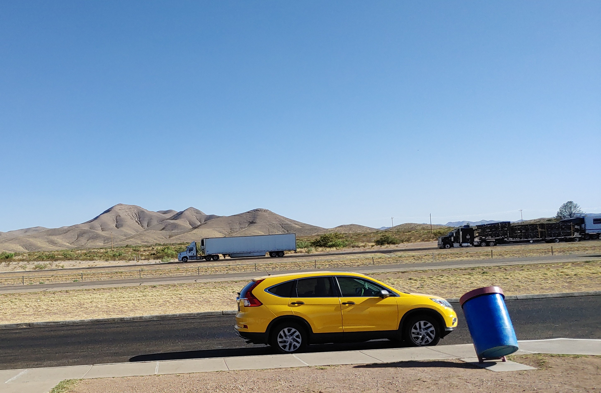

Texas
I'm traveling the country, stopping at certain cities for a while, and chronicling tidbits of that journey here.
My starting point was Plano, Texas. This is my car parking in a rest area somewhere in west Texas.
Las Cruces

The crosses. Almost like crossroads. As if once you cross there's no turning back. I feel like I'm again and again taken to this spot in my life. Where I must make a decision but both options are wrong.

But that's what makes the Organ Mountains so beautiful. Very difficult hike, 5.5 hours after the losing the trail several times. Did not bring food, almost bonked, but managed to stumble down to the base.
Phoenix
The bird that revives. The byproduct of that heat resulted in the sunshine state. I'm kidding.

There's something charming about building a city in the desert. Also, did not expect to spend almost 2 hours in a laundromat. Got what looked like bed bug bites after staying at an AirBnb. Laundered everything just in case.